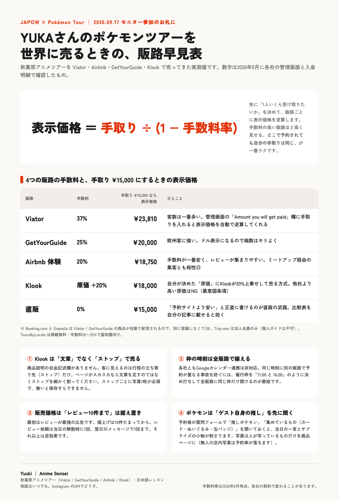

9/17 モニター参加のお礼に｜from Yuuki
秋葉原アニメツアーを4つの販路で売ってきた経験から、今日から使える試作品6つと、アイデア6つ。
Viator 37% ／ GetYourGuide 25% ／ Airbnb 20% ／ Klook 原価+20%。表示価格＝手取り÷(1−手数料率)。

対面診断のときに手元で見る台本。20問のヒアリングと、聞いた内容を3分類に落とす早見、提案の弾12案。チェックとメモは端末に残ります。
ヒアリングシートを開く現サイトの配色とレイアウトを残したまま、5問の事前診断・7日チェックリスト・料金シミュレーター・市役所の持ち物リストを足した案。3案の見比べもできます。
改善版Bを開く 現サイトとA案とB案を並べて見る解散時にカードを1枚渡す。「Coming to live in Japan? Free orientation」。表と裏をQRで繋ぎます。
参加特典にツアー割引コードを付ける。Airbnbは割引を出せないので、直販か手渡し予約で。
Airbnb1本は在庫リスクです。出品に使える英文案は次のセクションに用意しました。
ポケモンセンターヨコハマやピカチュウ関連は、東京と別タイトルにした方が検索に出ます。
解散時に1回だけお願いする。回数を増やさないのがコツです。
韓国語・繁体字・フランス語・スペイン語を同じレイアウトで。ワーホリ協定国に合わせます。
TITLE（80字以内）
Yokohama Anime & Pokémon Tour: Trading Cards, Hobby Shops & Local Sweets
和訳: 横浜アニメ＆ポケモンツアー：トレカ・ホビーショップ・ご当地スイーツ
SHORT DESCRIPTION（3文）
Spend three hours exploring anime and Pokémon shops with an English-speaking local guide. You will visit trading card and hobby shops, a Pokémon Center, and hidden hobby stores that most visitors walk past, with a stop for local sweets along the way. Free time at the end lets you shop at your own pace before we say goodbye.
和訳: 英語を話す地元ガイドと一緒に、3時間かけてアニメとポケモンのお店をめぐります。トレーディングカードとホビーのお店、ポケモンセンター、ほとんどの旅行者が通り過ぎてしまう隠れたホビー店を訪ね、途中でご当地スイーツにも立ち寄ります。最後は自由時間があるので、解散前に自分のペースで買い物ができます。
HIGHLIGHTS（3つ）
和訳: